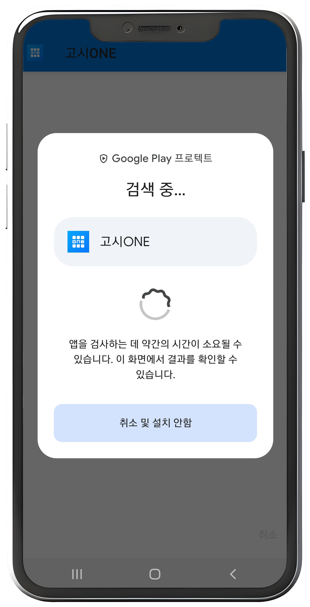
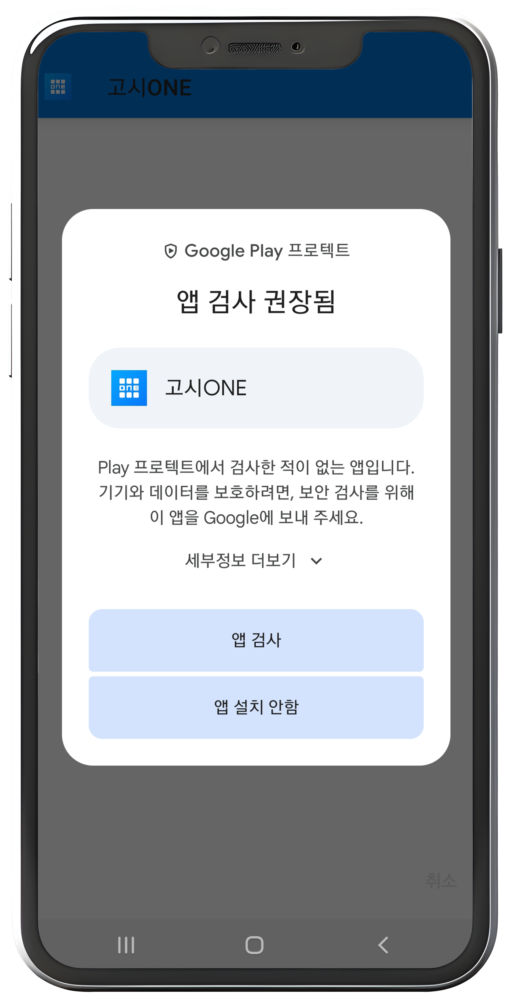
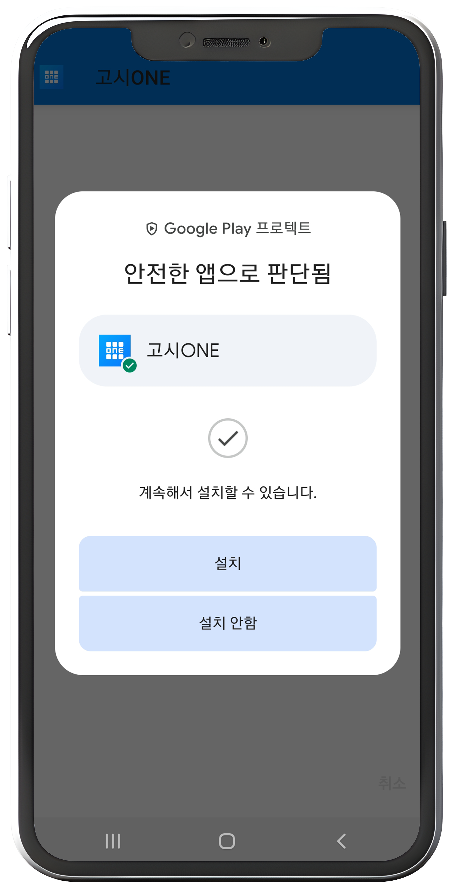
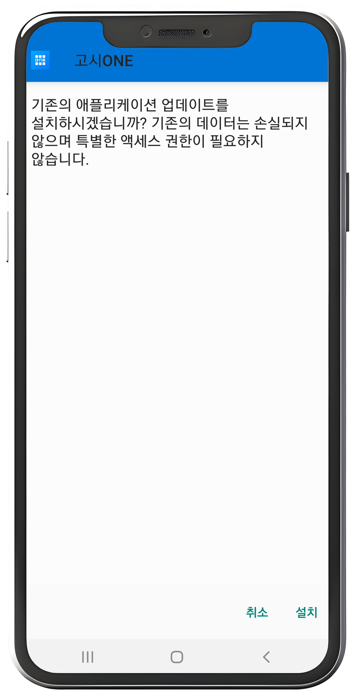

1. 설치 방법
고시ONE 설치파일을 처음 실행하면 Google Play 프로텍트 확인 화면이 나올 수 있습니다. 아래 순서대로 진행하면 앱을 안전하게 확인한 뒤 설치할 수 있습니다.

1) 검사 화면 기다리기
처음 설치할 때 휴대폰이 앱을 한 번 확인하는 과정입니다. 문제가 있는 화면이 아니니 잠시 기다리면 됩니다.
이 화면은 Play 스토어 밖에서 받은 설치파일을 휴대폰이 자동으로 확인할 때 나타납니다.

2) 앱 검사 누르기
보안을 위해 확인을 권장하는 안내입니다.앱 검사를 누르면 휴대폰이 고시ONE 설치파일을 확인합니다.고시ONE이 새 설치파일이거나 Play 스토어에 등록된 앱이 아니면 이 화면이 나올 수 있습니다.기기에 따라 무시하고 설치 또는 비슷한 문구가 보이면 그 버튼을 눌러 설치를 계속하면 됩니다.

3) 안전 판단 확인하기
안전한 앱으로 확인되면 계속 설치할 수 있습니다. 화면의 설치 버튼을 누르면 다음 단계로 진행됩니다.
검사가 끝나고 안전한 앱으로 판단되었다는 뜻이므로 안내에 따라 설치를 진행하면 됩니다.

4) 설치 누르기
처음 설치 확인 화면입니다. 설치를 누르면 고시ONE이 휴대폰에 설치됩니다.
휴대폰에 앱을 추가하기 전 마지막 확인 단계입니다. 특별한 권한을 요구하지 않는 안내라면 그대로 설치하면 됩니다.
설치가 끝나면 고시ONE을 실행하고, 발급받은 라이선스키로 인증을 진행하세요.